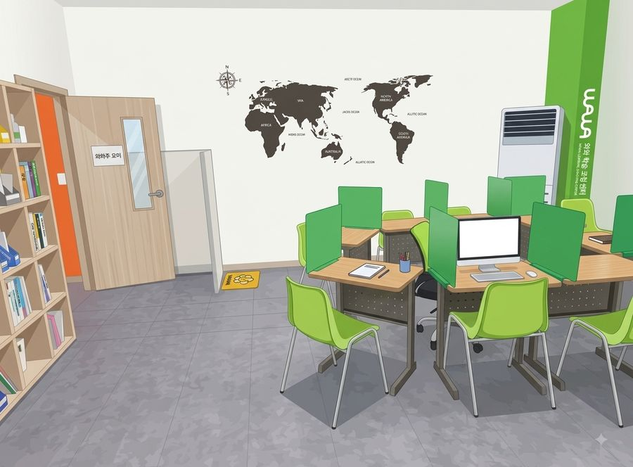

학생은 각자 자기 교재를 풉니다.
지점 안내
| 주소 | 충남 아산시 탕정면 한들물빛5로 5 605호 모두오름학습코칭학원 스타벅스 건물 뒷 건물 , 롯데리아 건물 |
|---|---|
| 주변 | 탕정역 인근 |
| 수업 과목 | 국어초1~고1영어초1~고2수학초1~고3과학초1~고1사회초1~고1 |
| 수업 시간 | 평일 오후 2시 이후 · 주말불가 상담은 미리 예약 · 셔틀버스 운영 안 함 · 금액은 아래 수강료 표 참고 |
오시는 길
와와의 수업 방식
칠판·판서로 진도를 나가는 강의식 수업이 아니라, 학생마다 다른 개별 진도 수업입니다. 정해진 개강일이 없어 이번 달 중간에라도 시작할 수 있고, 주당 횟수와 교재, 커리큘럼도 학생마다 다르게 짭니다. 같은 교실에 앉아 있어도 각자 다른 단원을 공부하는 이유입니다.
한 가지는 분명히 해 두겠습니다. 이 수업은 과목 수업입니다. 국어·영어·수학·과학·사회 각 과목을 그 과목 선생님이 소수 인원으로 가르치고, 그 위에 공부 방법과 습관을 만드는 학습코칭이 함께 갑니다. 설명을 들을 때는 아는 것 같다가도 혼자 풀면 막히는 경우가 많아서, 학생이 직접 푸는 시간을 길게 잡습니다.
- 시험 기간에는 3~4주 전부터 학교별 내신 대비 체제로 들어갑니다.
- 기초가 부족하면 기초부터, 여유가 있으면 상담을 거쳐 심화나 연계학습까지 나갈 수 있습니다.
- 지점에 따라 개설 과목과 대상 학년이 달라서, 정확한 내용은 상담에서 확인해 주세요.
초초등부
초등 고학년은 중학교 내신의 기초를 만드는 시기입니다. 연산, 어휘 같은 기본기를 학기마다 점검하고, 부족하면 학년을 거슬러 올라가 메웁니다. 하루 학습량을 기록하게 해서 공부 습관을 만드는 데 비중을 둡니다.
중중등부
중학교부터는 지필고사와 수행평가가 성적을 만듭니다. 시험 4주 전에 과목별 대비 일정표를 만들고, 수행평가 제출물도 학원에서 챙깁니다. 자유학기제 학년은 고교 내신을 내다본 연계학습과 기본기 보강에 씁니다.
고고등부
고등부는 시험 범위가 넓고 진도가 빨라서 평소 진도 관리가 그대로 내신 대비가 됩니다. 주 단위로 학습량을 점검하고, 모의고사 성적과 내신 등급을 같이 놓고 수시와 정시 중 어느 쪽에 비중을 둘지 상담에서 잡아 드립니다.
과목별 수업 안내
아래 과목을 누르면 탕정점(모두)의 과목별 수업 순서와 내신 준비 방법을 확인할 수 있습니다.
관리 학교
현재 탕정점(모두)에 다니는 학생들의 학교 목록입니다. 학교별 시험 준비 방법은 이름을 눌러 보세요. 여기 없는 학교 학생도 상담 후 수업이 가능합니다.
영상으로 보는 와와

자주 묻는 질문
강의식 수업인가요?
칠판 강의는 하지 않습니다. 학생이 각자 자기 진도의 교재를 풀고, 선생님은 옆에서 확인하다가 막히는 부분을 설명합니다. 계획과 오답 정리도 매 수업 같이 봅니다.
상담은 어떻게 신청하나요?
수업료는 어떻게 되나요?
중간에 등록해도 진도를 따라갈 수 있나요?
네. 반 진도가 따로 없어서 언제 시작해도 손해가 없습니다. 등록 첫 주에 진단을 하고 그 결과에 맞춰 교재와 시작 단원을 정합니다.